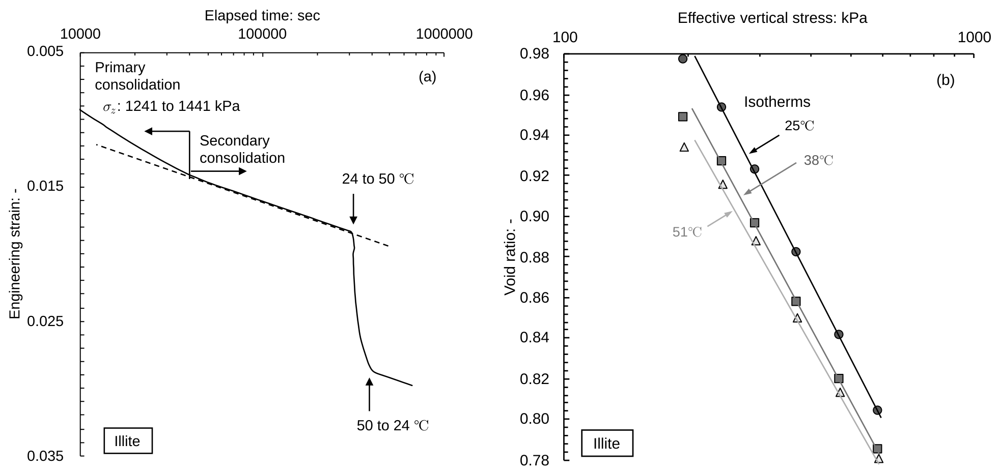
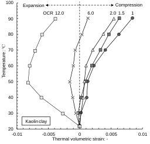
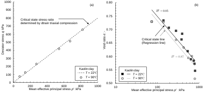
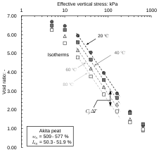
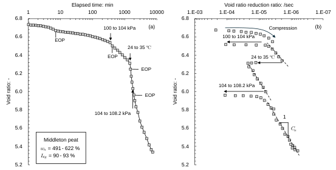
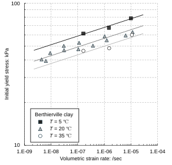
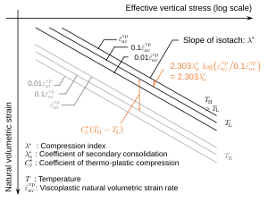
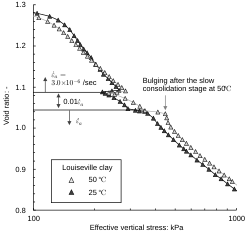
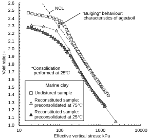
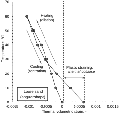

Ch3.4.1
Experimental findings and isothermal isotach concept
Temperature dependence (i.e., thermo-mechanical characteristics) of fine-grained soils has long been recognised. Earlier discussions can be found elsewhere (e.g., Laguros, 1969; Mitchell, 1969; Plum and Esrig, 1969). Representative findings on volumetric responses in these studies are shown in Fig. 3.4.1; heating of illite induces compression, whereas cooling decelerates this process.

Oedometer test results under three temperature conditions (i.e., 25, 38, and 51 °C) reveal that the effective stress-strain relationship is temperature-dependent, which is later referred to as isotherms, in analogy with the isotach concept (Leroueil, 2006).
A comprehensive set of data, covering both volumetric and deviatoric responses, has been obtained from a temperature-controlled triaxial test on reconstituted kaolin clay by Cekerevac and Laloui (2004). They observed that thermo-plastic compression decreases with increasing OCR, whereas elastic thermal expansion becomes increasingly significant (Fig. 3.4.2). A comparable observation was also made by Towhata et al. (1993).

Regarding deviatoric (shear) responses, while the critical-state stress ratio $M$ remains constant irrespective of temperature, the critical-state line is temperature-dependent, as presented in Fig. 3.4.3. This suggests that thermal effects are primarily manifested through volumetric hardening, with the shear responses reflecting it. In fact, this idea is supported by other studies (Houston et al., 1985; Abuel-Naga et al., 2006; Coccia et al., 2016a, 2016b; Samarakoon et al., 2022, 2023; Hashemi et al., 2023; Kirkham and Potts, 2023), and has been incorporated into many constitutive models (e.g., Hueckel and Baldi, 1990; Cui et al., 2000; Graham et al., 2001; Laloui et al., 2002; Laloui and Cekerevac, 2007), enabling a feasible formulation of thermo-mechanical behaviour of clays.

Relevant studies on peats have been conducted by only two research groups (Fox and Edil, 1996; Hanson et al., 2001; Oikawa and Ogino, 2001; the first two being essentially the same). Observed thermo-mechanical behaviour of peats are similar to those of clays; Oikawa and Ogino (2001) reported that isotherms exist for a peat with a natural water content of 509–577% (Fig. 3.4.4), and introduced a coefficient to express this.

For this response, the coefficient of thermo-plastic compression may be defined in terms of void ratio or natural volumetric strain:
Hereafter, these are referred to collectively as the coefficient of thermo-plastic compression.
Meanwhile, Fox and Edil (1996) controversially claimed that the coefficient of secondary consolidation varied with small stress changes $\Delta\sigma'_z$ (typically 3–5% of the existing load) as well as temperature changes $\Delta T$, based on their test results (Fig. 3.4.5a), where the strain rate correspondingly varied as shown in Fig. 3.4.5b. Accordingly, they proposed the following relationship:

Here, the subscripts 1 and 2 denote the states before and after the stress or temperature change, respectively, and $C_\sigma$ and $C_T$ are empirical indices to predict the corresponding strain-rate changes. However, Eq. (3.4.4) is inconsistent with the strict definition of the coefficient of secondary consolidation, which is defined under isobaric and isothermal conditions. The two indices can rather be related to the conventional parameters as:
The substitution of pairs of $e$ and $\sigma'_z$, obtained from their test results, into the above equation yields nearly constant values (i.e., $C_\alpha/C_c \simeq 0.064$–$0.072$), consistent with Eq. (3.3.21). Also, Eq. (3.4.8) indicates that $C_\sigma$ is proportional to the coefficient of secondary consolidation, and $C_T$ to the coefficient of thermo-plastic compression in the classical framework. Although the work by Fox and Edil (1996) highlights the importance of incorporating simultaneous effects of strain rate and temperature in peats, its consistent framework has yet to be established.
For clays, in contrast, Boudali et al. (1994) and Marques et al. (2004) explicitly showed that preconsolidation pressure in clays depends on both strain rate and temperature (e.g., Fig. 3.4.6). This finding is adopted in modelling the thermo-viscoplastic behaviours of clays (e.g., Yashima et al., 1998; Leroueil, 2006; Laloui et al., 2008; Nakai et al., 2011).

Their formulations indicate that the coupling between temperature and strain rate can be represented as an extension of the isotach concept, as schematically illustrated in Fig. 3.4.7. In this study, this is referred to as the isothermal isotach concept. Its formulation is presented in the next section, and its applicability to peats is discussed in Chapters 5 and 6.

Some fine-grained soils, however, do not obey the isothermal isotach concept. Tsutsumi and Tanaka (2012) conducted multi-stage constant-rate-of-strain (CRS) tests on Louiseville clay at two temperatures (10 and 50 °C), in which the strain rate was reduced to 0.01 times the reference value in the middle of compression. The effective stress-strain curve during and after the slow-rate stage at 50 °C exhibits a more pronounced “bulging” compared with that at 10 °C.

Such bulging behaviour resembles the characteristics of structured soil, reflecting stronger interparticle bonding over the long period of natural consolidation, and consequently higher stiffness. Similarly, Tsuchida et al. (1991) found that consolidation of a marine clay at high temperature (i.e., 70 °C) reproduces a structure comparable to that of the natural deposit, by comparing undisturbed samples with reconstituted ones preconsolidated at 25 and 70 °C (Fig. 3.4.9). The complex thermo-mechanical behaviour seen in Fig. 3.4.8 therefore reflects the evolution of soil structure under prolonged constant-rate compression, which cannot be captured by the isothermal isotach concept.

Also, the thermo-mechanical behaviour of expansive clays cannot be explained by the concept due to the simultaneous effect of complex swelling mechanisms, as seen in the literature (e.g., Tang et al., 2008; Hansen et al., 2012; Yang et al., 2021).
Although not directly related to the present study, the works by Pan et al. (2024a, 2024b) provide important insight into the thermo-mechanical behaviour of coarse-grained soils. They are among the first to rigorously explore this issue, showing that a heating-cooling cycle, accompanied by the thermal expansion and contraction of soil particles, leads to thermal collapse (i.e., plastic deformation due to particle reorientation), as shown in Fig. 3.4.10. Pan et al. (2024b) also reveal that plastic straining continues even after multiple tens of thermal cycles. The limited knowledge in this area makes it a promising topic for future study. Also, constitutive models for sands often adopt approaches different from those for soft soils (e.g., Nakai, 1989; Jefferies, 1993); careful interpretation is required.
